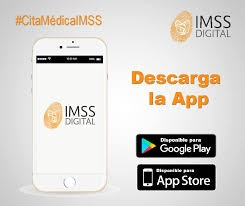
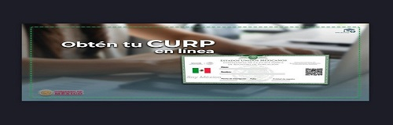

consulta tu numero de seguro social
El Seguro de Salud para Estudiantes es un esquema de aseguramiento médico que otorga el Instituto Mexicano del Seguro Social (IMSS) de forma gratuita a los estudiantes de las instituciones públicas de los niveles medio superior, superior y de postgrado.
Para obtener este beneficio, los estudiantes deben seguir estos pasos:
Obtener el Número de Seguridad Social (NSS). Puedes hacerlo a través de la página web del IMSS, descargando la App del IMSS en tu celular, o acudiendo a alguna de las subdelegaciones del IMSS con tu CURP, comprobante de domicilio, correo electrónico, una identificación oficial y acta de nacimiento.
Proporcionar el NSS a tu escuela para que te registren como estudiante en el IMSS.
aplicacion del imss aqui

Darte de alta en la Clínica (Unidad de Medicina Familiar, UMF) más cercana a tu domicilio para recibir atención médica.
Este seguro cubre atención médica, farmacéutica y hospitalaria, sin ninguna restricción respecto a las enfermedades que atiende. El seguro solo te da derecho a atención médica durante el tiempo que estés dado de alta como estudiante en una institución educativa pública de nivel medio superior, superior o de postgrado. No tiene ningún costo.
si ya cuentas con seguro social y no sabes cual es tu nuumero de seguro social da click aqui

consulta tu clave unica (curp)
La Clave Única de Registro de Población (CURP) es un instrumento que sirve para registrar en forma individual a todos los habitantes de México, nacionales y extranjeros, así como a las mexicanas y mexicanos que radican en otros países1. Fue establecida el 23 de octubre de 1996 y se publicó en el Diario Oficial de la Federación. A continuación, te proporciono más detalles sobre la CURP:
¿Qué es la CURP?: La CURP es un código alfanumérico único que identifica a cada persona de manera individual. Es utilizado en diversos trámites oficiales y administrativos en México.
¿Cómo consultar tu CURP?: Puedes consultar tu CURP en línea indicando la clave CURP si ya la conoces, o proporcionando tu nombre y datos de nacimiento. Para solicitar asistencia o reportar datos incorrectos, puedes comunicarte al Centro de Atención.
¿Para qué sirve?: La CURP se utiliza para identificar a los ciudadanos en trámites gubernamentales, como inscripciones escolares, trámites de seguridad social, obtención de licencias, entre otros.
¿Cómo obtenerla?: Puedes obtener tu CURP en línea o acudiendo a las oficinas correspondientes.
si quieres consultar tu curp da click aqui
